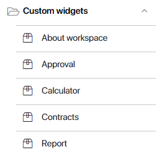
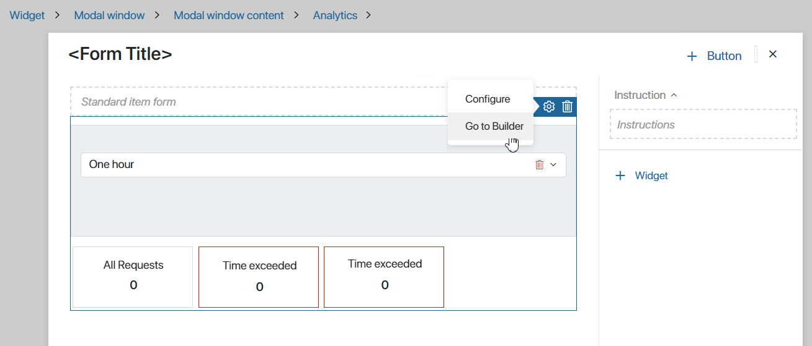
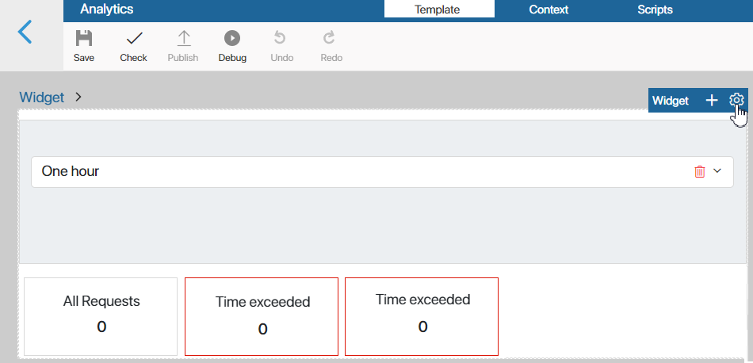
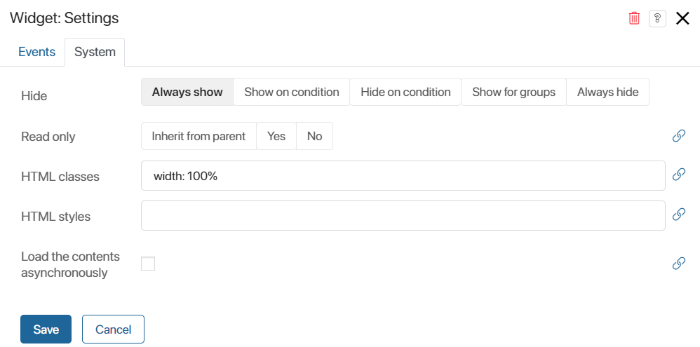
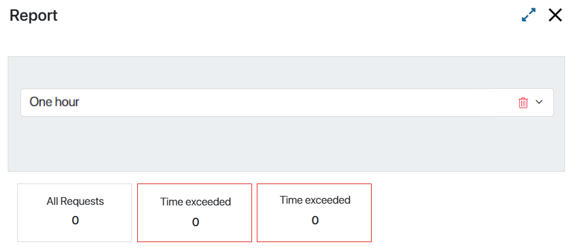
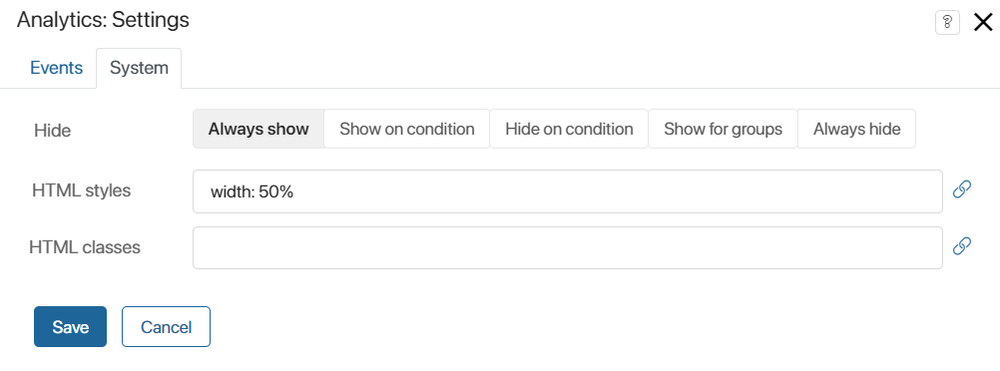
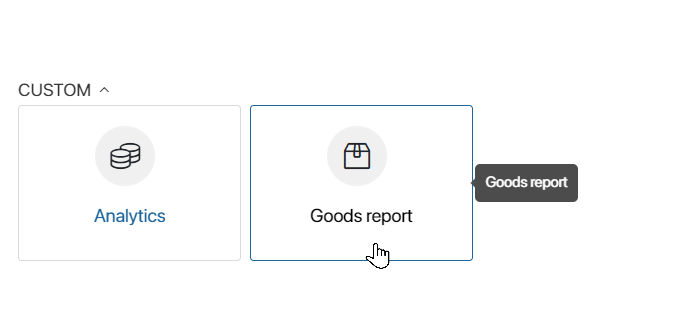

Users who are members of the Administrators group can create and publish such widgets. By creating a custom widget, you can:
- On a custom widget, place other system and custom widgets, as well as context variables and scripts.
- Enable additional options that control the display and value of context variables when the widget is added to a form or page.
- Create a unique widget setting window.
- Set system settings that will be applied by default when the widget is placed on any interface element (page, form, other widget).
- Set up the location and design on the widget on a form and in the interface designer.
To finish configuring the widget, in the top panel of the interface designer, click Save and Publish. The widget will then appear in the Custom widgets group and you can use it multiple times.

To learn more about the system interface, see Set up interfaces and Interface designer.
Custom widget builder
Let’s see how a custom widget is configured. Consider that the Analytics custom widget is placed on the report form. Now we will move on to its settings:
- Open the report form template in interface designer, select the widget, and click the gear icon.

Options are available in the opened menu:
- Customize. Open widget settings that will be applied only on the current form.
- Go to Builder. Open the widget template to specify system settings that will be applied by default on any interface element where the widget is used.
- Select the Go to Builder option. This opens the widget template in the interface designer. Select the widget and click the gear icon.
 - In the settings window that opens, on the System tab, in the HTML styles field, set the value width: 100%.

Then on any form or page, the widget will be displayed by default to the full width of the element within which it is located. In our example, the Analytics widget will be displayed to the full width of the report.
 - Open the report form template again, select the Analytics widget, click the gear icon, and select the Configure option.
- The settings that apply only to the current form will be displayed. If you set width: 50% in the HTML styles field, it will be applied to the current report form instead of the width: 100% value set earlier.

Page widget
To configure pages, which are also a part of the system structure like an app or workspace, you can use widgets of the Page type.
When you are setting up a page in the interface designer, you are actually working in a widget template of the Page type. By filling it up with other widgets, context variables, and scripts, you are creating a custom Page widget.
You can also create such a widget in Administration > Interfaces. In the top-right corner, click +Create and select Page. To learn more, see Set up interfaces.
When a Page widget is ready, you can reuse it on different pages. To add it to a new page, click Add widget when creating the page. Then select the widget from the list of custom widgets.
